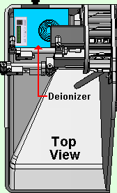
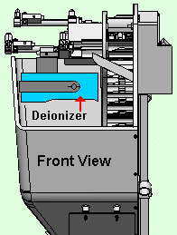
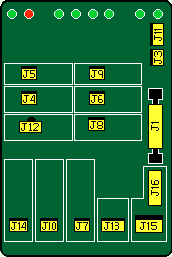

Installing Deionizer
This procedure describes how to install a deionizer into the bulk vessel feeder.
Required Materials: Deionizer Blower Kit
- Bracket, deionizer blower —Attaches the deionizer to bulk feeder hopper.
- Cable, power —Provides power to the deionizer blower.
- Deionizer blower —Ionizes the air passing through it.
Note:
- Availability of the original Deionizer Blower Kit (Part number A39713), with the deionizer-compatible bulk feeder interface PCB (Part number A35048), is limited to what is currently in stock. No more of these kits will be built.
- The original kit is intended only for instruments with the original bulk feeder and the bulk feeder interface PCB part number 011013 (not deionizer compatible).
- Once the original kit is out of stock, order the new Deionizer Blower Kit plus the interface PCB separately if needed (refer to the Manufacturing Cut-In information).
- The Bulk Feeder II Module has a unique Interface PCB that is deionizer compatible.
- Refer to the parts list for further information.
Perform this procedure when static electricity and its effects are causing:
- vessels to cling to the feeder parts or to each other.
- bulk feeder jams.
Reference Graphics:



Refer to this wiring list to move the wires from a deionizer incompatible PCB to the deionizer compatible PCB.
| Heat Shrink Label Text | Connects to Deionizer Incompatible PCB Connector | Connects to Deionizer Compatible PCB Connector |
|---|---|---|
| Bulk Feeder Interface (Ribbon Cable) | J1 | J1 |
| 011945 | J2 | J3 |
| BF I/F J4 | J4 | J4 |
| 011946 | J5 | J5 |
| 010470 | J6 | J6 |
| Dispenser | J7 | J7 |
| BF I/F J8 | J8 | J8 |
| 010480 | J9 | J9 |
| Lower Ejector | J10 | J10 |
| 010933 | J11 | J11 |
| Not Used | J12 | J12 |
| 010905 | J13 | J13 |
| Upper Ejector | J14 | J14 |
| Unmarked (4 Pin Connector) | J15 | J15 |
| Bulk Feeder Interface | J16 | J16 |